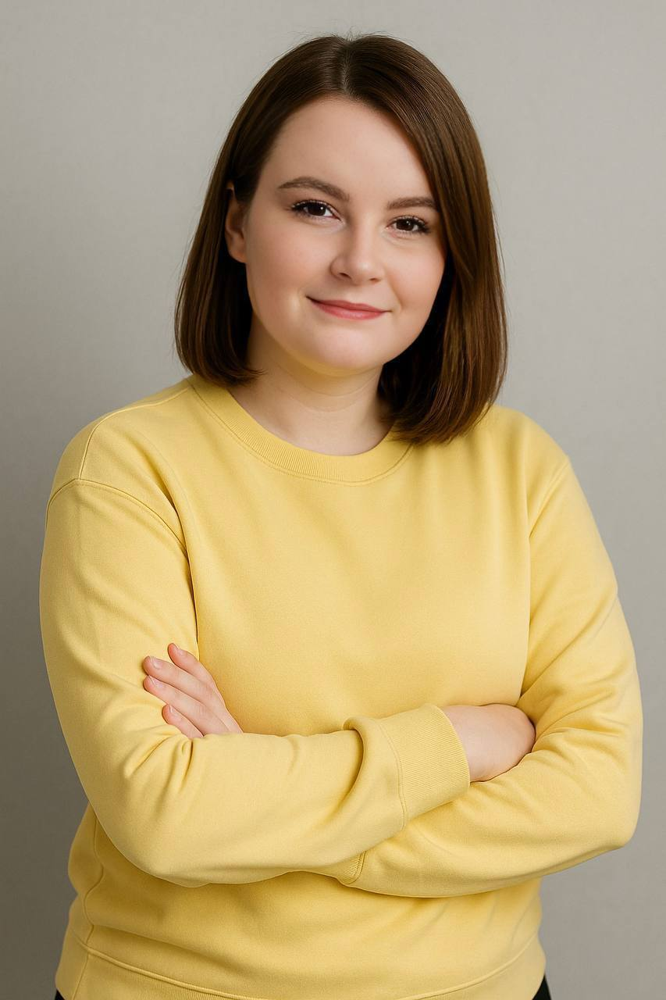

Научим ребёнка использовать AI, поможем освоить 12 современных профессий за 9 месяцев и собрать первое портфолио для будущей карьеры
AI уже трансформирует рынок труда. По прогнозу PwC, искусственный интеллект добавит до $15,7 трлн к мировому ВВП к 2030 году — это +14% к глобальной экономике. Ни одна профессия не останется прежней.
В среднем ученики Школы будущего получают оценки на 0,7 баллов выше, чем сверстники. Ребёнок научится учиться эффективно с помощью AI
В среднем в неделю для родителей. Больше не нужно проверять домашку до поздней ночи — ребёнок справляется сам
Соберёт собственные AI-проекты — основа для поступления, фриланса или первой подработки в будущем
От дизайнера до блогера — ребёнок попробует каждую и выберет своё направление
Освоит эмоциональный интеллект, публичные выступления, коммуникацию, тайм-менеджмент и работу в команде
Научится распознавать фейки, защищать данные и грамотно вести себя в интернете
Обучение через практику: каждый урок привязан к реальному проекту
Основы работы с компьютером, операционной системой. Можно с полного нуля — даже если впервые сел за ПК.
Защита данных, распознавание фейков, авторские права, безопасность в социальных сетях.
Для математики, естественных и гуманитарных наук. Учим не списывать, а формулировать вопросы для нейросетей так, чтобы ребёнок понимал материал
Работа в Pixso (аналог Figma). Композиция, цвет, типографика + генерация с помощью нейросетей.
Создание сайтов на Тильде. Свой первый лендинг — готовая работа в портфолио.
Scratch и Construct — создание своих игр от идеи до публикации. Учимся не только играть, но и создавать.
Написание историй, сценариев и диалогов с помощью AI. Развитие креативного мышления и навыков сторителлинга.
Создание иллюстраций и комиксов: от концепции до финального арта. Нейросети генерируют визуалы по промптам ученика.
Создание музыки и звуковых эффектов с помощью AI. Свой первый трек за один урок.
Съёмка и монтаж видеороликов. Генерация визуальных эффектов нейросетями. Публикация готового проекта.
Основы программирования и предпринимательского мышления — фундамент для будущей карьеры.
Создание и ведение блога. Работа с аудиторией, контент-план, продвижение — навыки, которые пригодятся в любой профессии.
Итоговый проект, объединяющий все навыки. Сборка портфолио из лучших работ — готовый актив для будущей карьеры.

Windows 10+, веб-камера, мышка. Можно с полного нуля — даже если ребёнок впервые сел за компьютер. Удобный личный кабинет, все уроки в одном месте.
Мы в Школе будущего стремимся дать всестороннее развитие, поэтому дарим
Сами разберётесь в нейросетях параллельно с ребёнком
Мнемотехника, эмоциональный интеллект, конфликтология
Доступ к нейроклубу для взрослых и детей + консультация нейропсихолога
Вот, что о нас говорят ученики курса и их родители
Сын перестал просто сидеть в телефоне — теперь сам делает сайты и показывает мне. За два месяца оценки по информатике выросли с 3 до 5. Очень довольны!
Я научился делать игры в Scratch и уже создал свою первую игру! А ещё теперь помогаю маме делать картинки в Midjourney для её работы.
Наконец-то ребёнок сам делает уроки и не просит помощи. Использует нейросети грамотно — не списывает, а разбирается. Я свободна по вечерам впервые за годы.
Да, можно с полного нуля — даже если ребёнок впервые сел за компьютер. Программа начинается с основ.
Нет. Мы учим не списывать, а формулировать вопросы для нейросетей так, чтобы ребёнок понимал материал.
Полностью онлайн. Видеоуроки 24/7 + live-встречи каждую неделю. Групповой — мини-группы от 3 человек. Индивидуальный — 1 на 1 с педагогом в удобное время.
Да, на 24 месяца. Групповой — от $33/mo, индивидуальный — от $46/mo. При оплате картой — дополнительная скидка.
Компьютер или ноутбук (Windows 10+), стабильный интернет (не мобильный), веб-камера и мышка. В идеале — своя почта.
Запишите ребёнка на бесплатный урок — он попробует нейросети в деле и поймёт, подходит ли ему обучение
Записаться на бесплатный урок